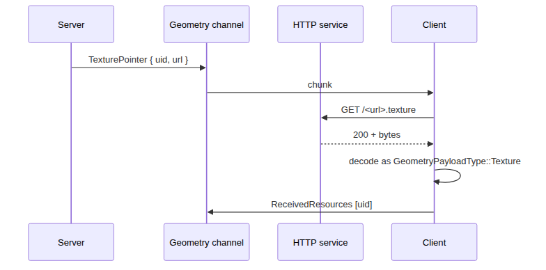

6.6. HTTP Service¶
The HTTP service is the third leg of the protocol. It serves bulk static assets (textures and meshes) over plain HTTP or HTTPS, separately from the real-time data transport. Its purpose is to keep large, immutable, cacheable payloads off the latency-sensitive WebRTC data channels.
Reference implementation: teleport::server::DefaultHTTPService, backed by cpp-httplib. The service runs in a dedicated thread inside the same server process as ClientManager.
6.6.1. Endpoint¶
Default port: 80 (HTTP) when no certificate is provided, 443 (HTTPS) when
certPathandprivateKeyPathare configured. The reference server hard-codes port 80 inClientManager::initialize; alternative deployments are free to put the service behind a CDN or reverse proxy.Bind address:
0.0.0.0.Mount point:
/mapped to thehttpMountDirectorypassed inInitialiseState. Every file under that directory is served verbatim.TLS: when enabled,
cpp-httplib’s OpenSSL server is used. The reference build currently disables OpenSSL because of a link conflict with WebRTC; production deployments should fix this or sit the service behind an HTTPS terminator.
6.6.2. URL format¶
Asset URLs are constructed by the server in teleport::server::GeometryEncoder::encodeTexturePointer():
https://<httpRoot>/<relative-path>.<extension>
httpRootis set on the server side byGeometryStore::SetHttpRoot. It is the host (and optional path prefix) that fronts the static directory; it is not currently transmitted to the client throughSetupCommand.relative-pathis the asset’s path within the cache, derived from its uid and human-readable name.extensionis decided by the asset writer (.texture,.mesh,.basis,.material, …). The reference server registers custom MIME types for these extensions:Extension
MIME type
.textureimage/texture.meshimage/mesh.materialimage/material.basisimage/basis
The full URL is delivered to the client inside the geometry stream, as the payload of a TexturePointer or MeshPointer chunk. Each pointer chunk contains a uint16 length followed by the UTF-8 URL bytes; the client opens that URL with HTTPS and treats the reply body as the corresponding Texture or Mesh payload (without the 17-byte chunk header).
6.6.3. Client behaviour¶
The reference client’s teleport::clientrender::GeometryDecoder keeps an internal avs::HTTPUtil with up to 12 simultaneous HTTPS connections and an on-disk cache rooted at <storage>/http_cache/.
If the URL inside a
TexturePointer/MeshPointeralready contains://, it is fetched verbatim.Otherwise it is treated as a relative path and the cache’s
defaultURLRootis prepended with the schemehttps://.defaultURLRootis initialised to the cache name, which the reference client sets to the server’s host name.Once the body is received,
GeometryDecoder::receiveFromWebdecodes it as if it had arrived on the geometry channel, with the appropriateGeometryPayloadType.The cache is content-addressed by URL; the server is expected to publish each immutable asset at a unique, stable URL.
6.6.4. Lifecycle¶
The server starts the HTTP service inside ClientManager::initialize, before any signaling port is opened, and stops it during ClientManager::shutdown. The service is shared by every connected client; there is no per-client HTTP authentication. Treat the directory as a public, read-only mirror of the asset cache.
6.6.5. Sequence¶

6.6.6. Operational notes for implementers¶
The client never sees an explicit “HTTP root URL” in
SetupCommand; either the geometry stream embeds full URLs (the production case) or you must publish the asset directory at the same host as the WebSocket signaling endpoint.The HTTP service is intentionally stateless. Resource expiry, ETag handling, range requests and authentication are not part of the protocol. CDNs are encouraged.
Servers that do not need disk-backed assets may omit the HTTP service entirely; in that case every
TextureandMeshresource must be sent inline on the geometry channel.